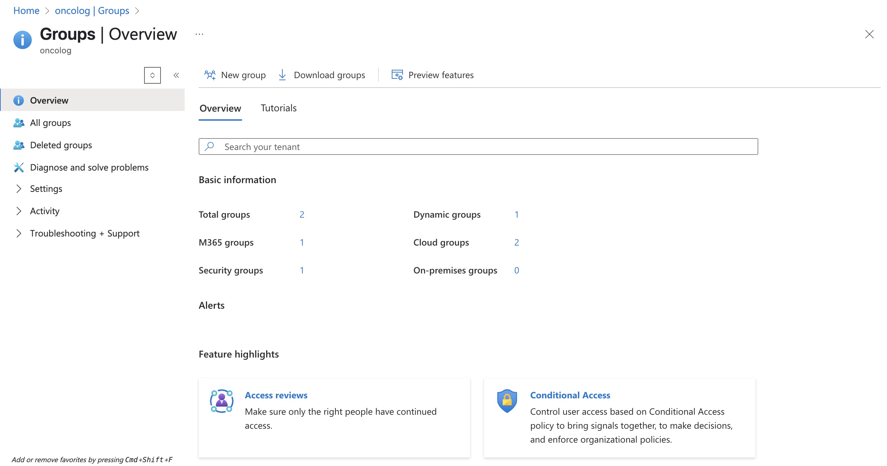
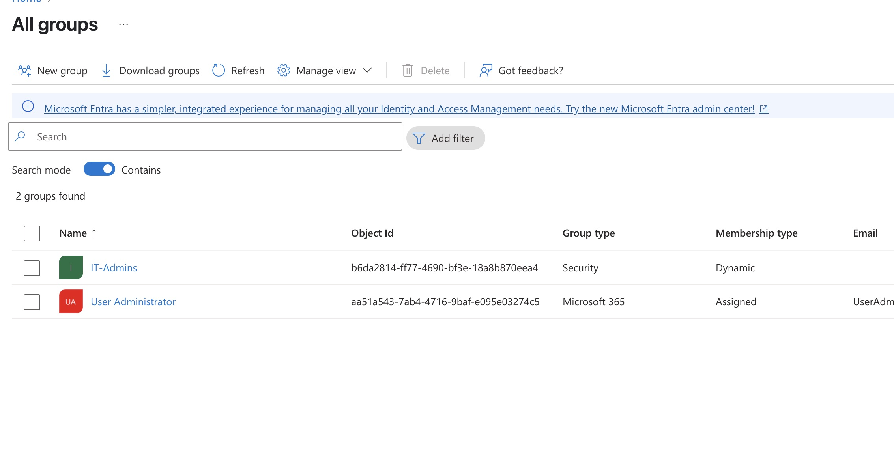
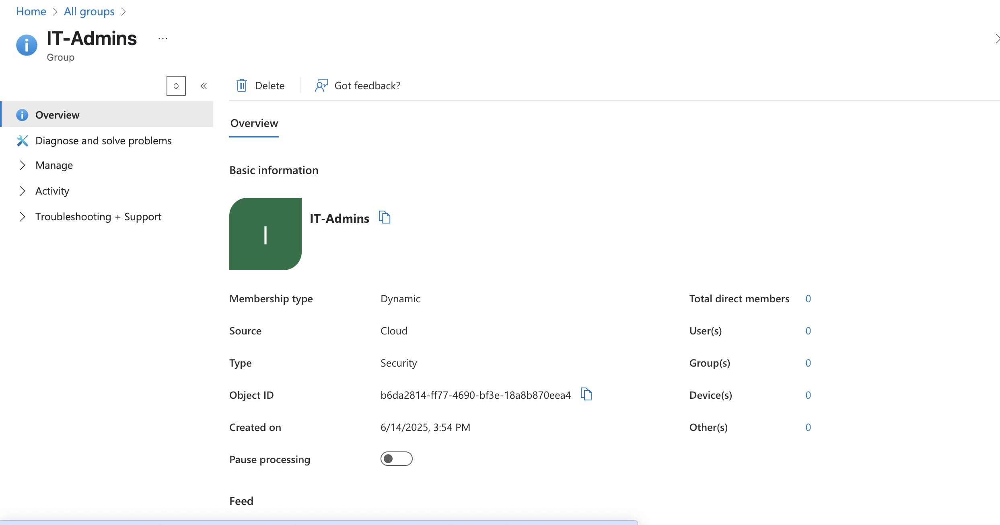
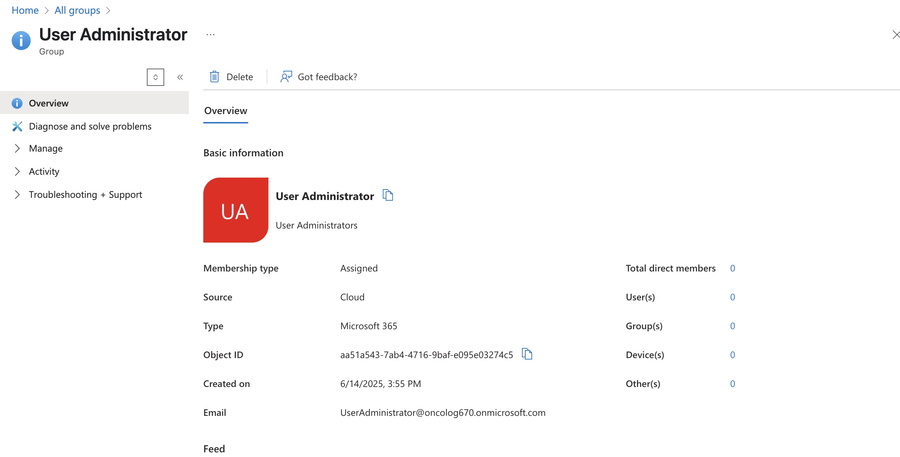

Assigned and Dynamic security groups
As an Azure Cloud Engineer, understanding how to use both assigned and dynamic security groups is fundamental. These group types are at the core of identity and access management (IAM) in Microsoft Entra ID (formerly Azure AD), and they directly impact how you control access, enforce policies, and automate user management across cloud resources.
🔹 What Are Assigned and Dynamic Security Groups?
Assigned Groups:
Dynamic Groups:
In our last project we created the 2 kind of groups you will be working on the most as a cloud engineer, assigned and dynamic groups.
MORE COMMING UP
MORE COMMING UP
MORE COMMING UP
MORE COMMING UP
CLICK HERE TO GO BACK TO PROJECTS